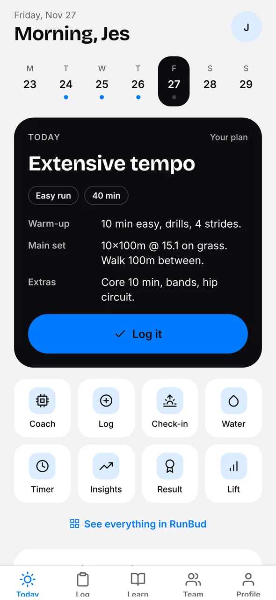
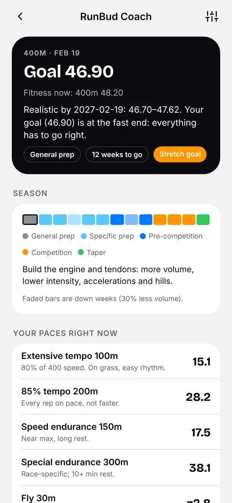
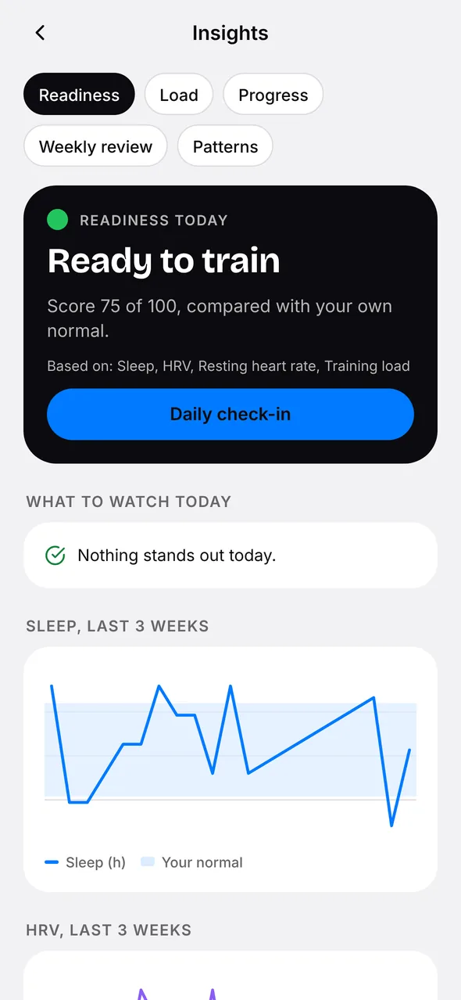
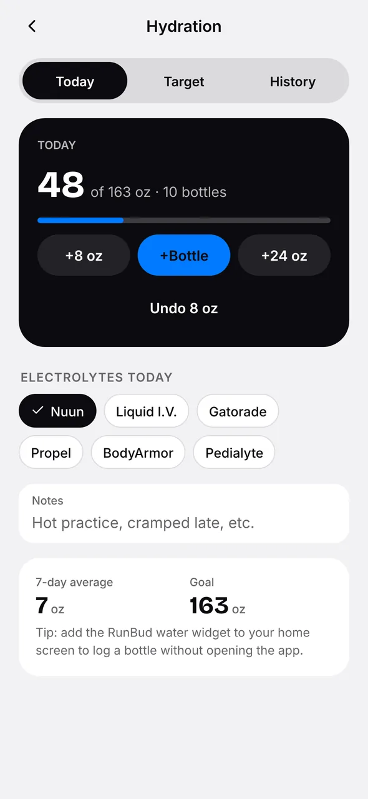

Your watch, read only
Runs, sleep, heart rate and HRV from Apple Health or Health Connect, including Garmin, Strava and Whoop when they sync there. RunBud never writes to Health, and watch data is never sent to AI.
RunBud 2.0 is in beta testing
RunBud Coach plans sprint, distance, hurdle, jump and throw training from your PRs, your training history and how you feel each morning. Then it adjusts when practice, class or a bad night's sleep gets in the way.
Free. Use the same account in the app and on this site. Android is in testing.

It isn't a chatbot guessing. It's a set of rules coaches use, applied to your numbers, and it shows its work.

A 400 m runner with team practice Monday, basketball Saturday and Sunday off.
| Day | Your setup | What RunBud Coach plans |
|---|---|---|
| Mon | Team practice | Your coach's tempo counts as the week's tempo day.Booked days fill a slot instead of adding to it. |
| Tue | Open, 60 min | Acceleration and max speed, then lower-body lift. |
| Wed | Open, 45 min | Recovery run and mobility.Keeps the two hard days apart. |
| Thu | Open, 75 min | Speed endurance: 3 × 150 m at your paces. |
| Fri | Open, 30 min | Easy strides and core. |
| Sat | Basketball | Counts as a medium day. No lifting. |
| Sun | Off | Rest. |
Log, check in, drink water, learn. Every screen below is from RunBud 2.0.




Runs, sleep, heart rate and HRV from Apple Health or Health Connect, including Garmin, Strava and Whoop when they sync there. RunBud never writes to Health, and watch data is never sent to AI.
Tap the widget to log a bottle without opening the app.
Ask about pain, fueling or training. Doctors, athletic trainers and dietitians get a verified badge after we check their license.
Rate every session 1 to 10 so you and your coach can see when easy days aren't easy.
Your log lives on your phone and backs up to your own account. No ad trackers, and teams only see what you share.
One hub for every athlete, on your phone, iPad or laptop. Post the day's workout for the whole team or one event group and choose when athletes see it.
Create your team in the app, then sign in here with the same account.
RunBud is built by Jesufifunmi Olugbenga, a Penn State cybersecurity student who ran the 100, 200 and 400 at Penn State. He built the training plan he couldn't find as an athlete, then made it work for every event group.
RunBud is independent and isn't affiliated with or endorsed by Penn State University.
Something else? Email support@myrunbud.com. We reply within 24 to 48 hours.
Yes. RunBud and RunBud Coach are free, with optional donations in the app.
iPhone, on the App Store. RunBud 2.0 for iPhone and Android is in beta testing now.
Yes. It's the same account. Create one here, then sign in on your phone.
RunBud Coach plans for sprints, hurdles, middle distance, distance, jumps, throws and multi-events.
In the app go to Profile, then Delete account, or delete it on this site.
No. RunBud shares general training information. For pain, injury or health concerns, talk to a doctor, athletic trainer or physical therapist.
Make it here. Sign in on your phone. Your first week is ready when you are.